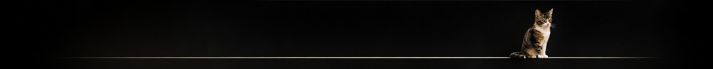

SOUND / IMAGE / EXPERIMENT
TEVLIS.
An independent sonic universe. Songs, fragments and visual experiments moving somewhere between intimacy, tension and the unexpected.
↘
SCROLL TO EXPLORE
— EST. IN SOUND
— EST. IN SOUND
01 / SELECTED RELEASE
Music
in motion.
A collection of songs and sound experiments. More transmissions will appear here.
ALBUM / 01
ONE
A first point of entry into the TEVLIS universe. A space for independent songs, unexpected textures and images that stay after the sound has stopped.
19 TRACKS / LISTEN HERETEVLIS / ONE — 19 TRACKS
0:000:00

Écoute directe sur le site. Aucun bouton de téléchargement n'est proposé.
03 / THE ARTIST
Not a genre. Not a formula.
A place to experiment.
A place to experiment.
TEVLIS is an independent music project exploring the space between song, sound design and image. The work moves freely across styles, with curiosity as its only fixed point.
04 / GET IN TOUCH